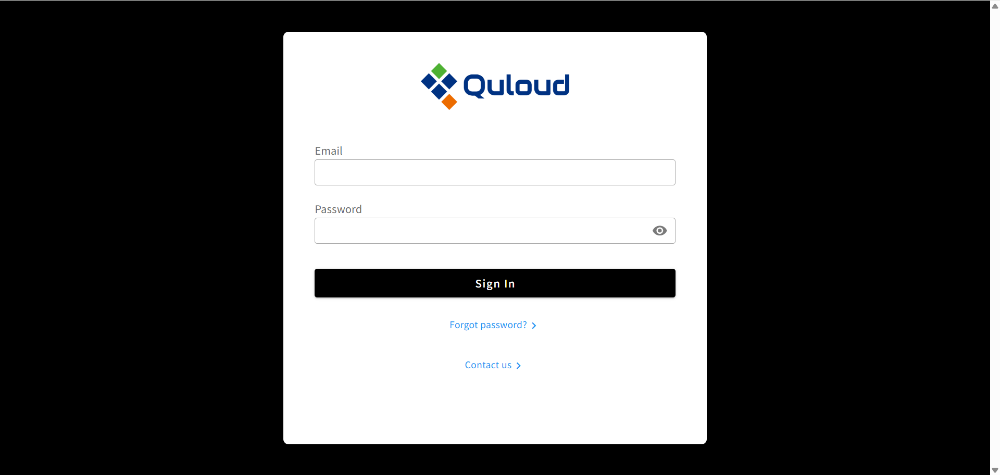
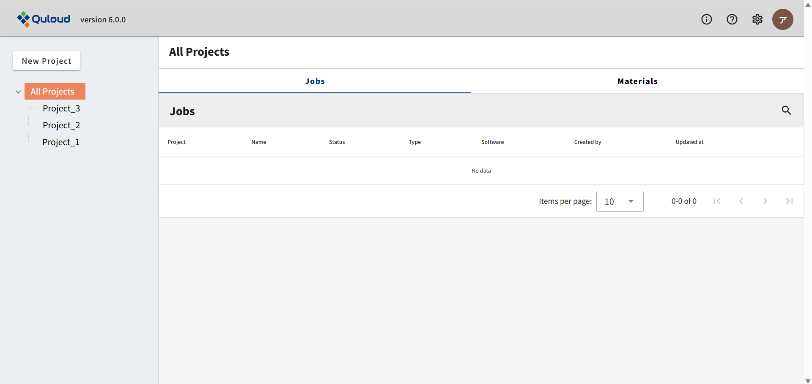
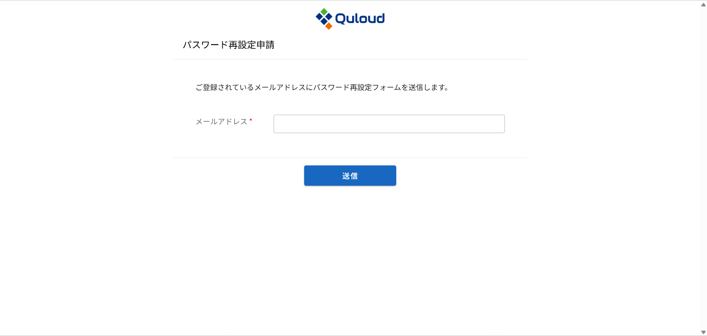
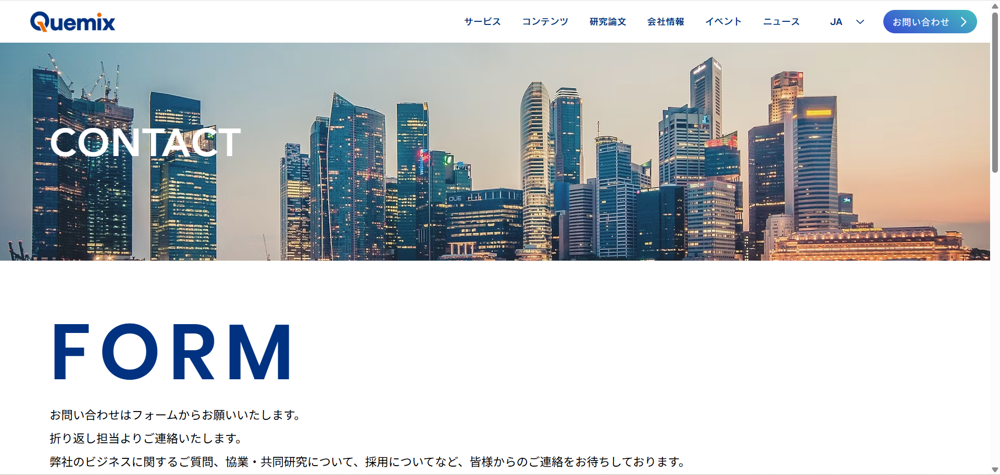
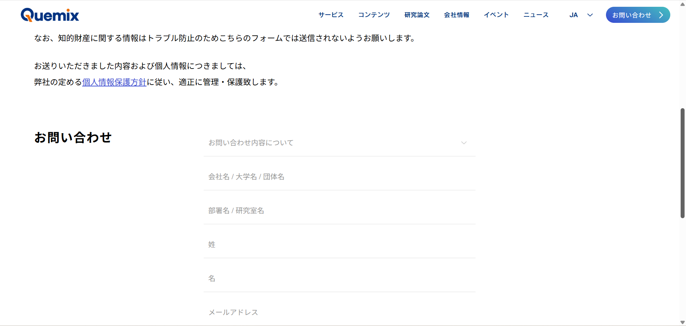
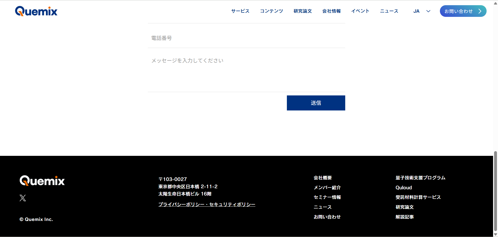
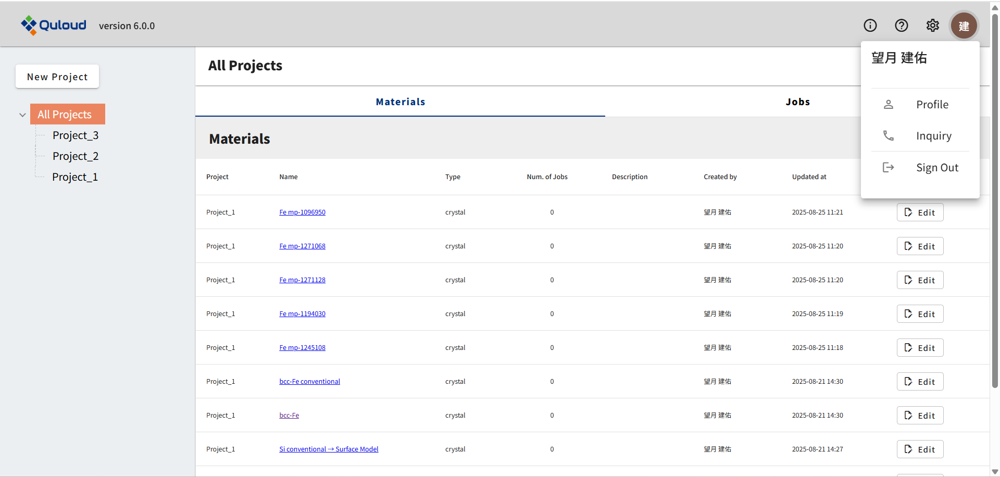

12. サインイン、サインアウト
サインアップ（１３章参照）したアカウントでサインインするには、まず以下のURLにアクセスしてください。
https://staging.2g.quloud-platform.com/sign_in
すると、以下の画面に移ります。
12.1. サインイン
上図の画面で、登録したメールアドレス、設定したパスワードを入力し、「Sign In」をクリックすると、トップ画面に移ります。
12.2. パスワードを忘れたときは
サインイン画面下部にある「Forgot password?」をクリックすると、パスワード再設定申請画面に移ります。 ここに、登録済みのメールアドレスを入力し、「送信」ボタンを押すと、メールアドレス宛に再設定フォームが送信されます。 リンクをクリックして、パスワード再設定を行ってください。
12.3. お問い合わせ
サインイン画面下部にある「Contact us」をクリックすると、お問い合わせフォームに移ります。 名前、メールアドレス、電話番号などを入力し、お問い合わせ内容を記入して「送信」ボタンを押せば完了です。 サインイン後のお問い合わせフォームとは異なり、確認画面はなく、いきなり送信されますのでご注意ください。
  12.4. サインアウト
ヘッダー部（１１章参照）のユーザーのアイコンをクリックし、「Sign Out」をクリックしてください。
